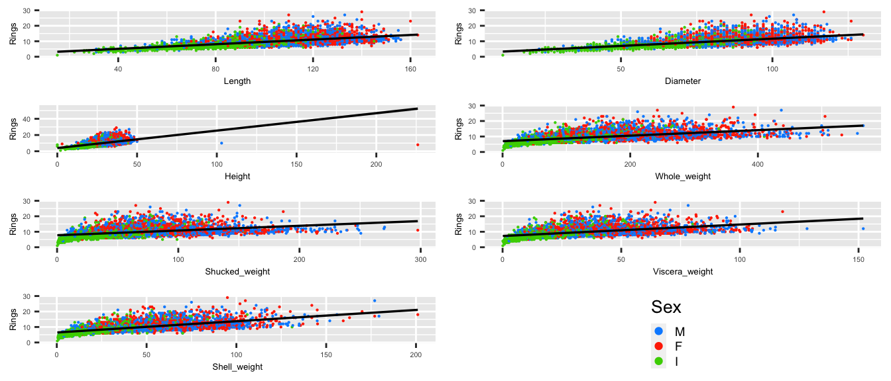
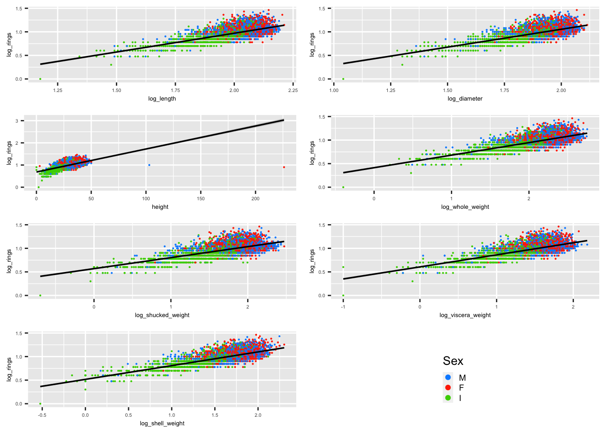
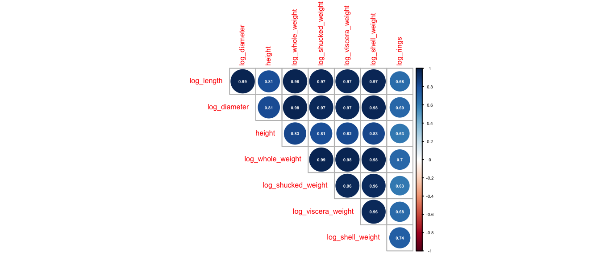
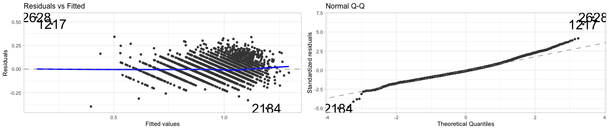
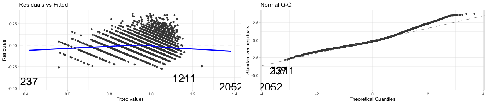

| Rsquared | RMSE | MAE |
|---|---|---|
| 0.504 | 0.098 | 0.075 |
Abalone Age Prediction
Abstract
In this report, I aimed to predict the age of abalone from the UCI Abalone Dataset by using only physical measurements. My research revealed that a model built exclusively with variables measurable from living abalone nearly matched the accuracy of the comprehensive model. Consequently, I suggest employing this streamlined model in future studies for its simplicity and benefits to animal welfare.
Introduction
The goal of the project was to predict the age of the abalone, or the number of rings, by using physical measurements. This allows abalone to be surveyed much more quickly. However, abalone still need to be opened up to measure the shucked, viscera and shell weight. This partially defeats the purpose of predicting the number of rings since the abalone still need to be killed.
As such, I produced a model that has access to all of the data, alongside a live model that is unable to use shucked, viscera and shell weight. The best model for each data set was found and compared to assess if their performance is comparable. Based on this performance assessment, recommendations were then made for the most optimal model for surveying the age of abalone.
Data Set
The data set consists of several physical measurements taken from a 4177 abalone of unknown origin. The majority of these are continuous variables, except for sex, which is categorical, and rings, which is an integer that provides the age of the abalone if 1.5 is added. The rings were counted by cutting and staining the abalone shell, before using a microscope to inspect and count each of the rings (Nash et al. 1995). In the original data, all of the continuous variables were divided by 200 so to simply result reporting, I reversed this by multiplying them by 200.
Analysis
The data set had no missing values and was assumed to be independent, as long as no individual abalone were measured twice. The distribution of rings is positively skewed.
Pre-Modelling Assumption Checking
To meet the assumptions of a valid linear regression, the dependent and independent variables must have a linear relationship including a consistent variance. There should also not exist multicollinearity amongst independent variables.
The variables were not linearly correlated with rings as the data fanned out, while sex did not seem to significantly affect the distributions, although infant abalone made up the bulk of the lower data points (Figure 1).
To improve the linearity of these relationships, I scaled the variables using the following scaling factors:
\[\begin{aligned} \log_{10}(\widehat{\text{Rings}}) =\ & \beta_0 + \beta_a\text{Sex}[M] + \beta_b\text{Sex}[F] + \beta_1\log_{10}(\text{Length}) + \beta_2\log_{10}(\text{Diameter}) + \\ & \beta_3\text{Height} + \beta_4\log_{10}(\text{Whole Weight}) + \beta_5\log_{10}(\text{Shucked Weight}) + \\ & \beta_6\log_{10}(\text{Viscera Weight}) + \beta_7\log_{10}(\text{Shell Weight}) + \\ & \varepsilon_i \end{aligned}\]Figure 2 shows the improved linearity of the scaled data. Multicollinearity may affect the usefulness of our model as all of the variables are highly positively correlated, but none of the variables were perfectly correlated (having a correlation coefficient of ±1), so it was not a major concern (Figure 3).
Model Selection - Original Model
To select the best variables as predictors for log rings, the following analysis facilitates the AIC minimisation approach.
The forward-stepping method starts from the null model consisting of none of the variables in the data set and adds the most formative variable in turn. In contrast, the backward-stepping method starts from the full model consisting of all variables in the data set and removes the least formative variables from the model in turn. Both approaches aim to minimise the AIC value.
Both the forward and backward-stepping methods suggested that the full model the the most optimal selection.
Model Assumption Checking - Original Model
For a multiple regression model to be valid, the model has to satisfy the following assumptions:
Linearity: Residuals are approximately symmetrical in their distribution above and below zero.
Homoscedasticity: Residuals are scattered symmetrically around the 0 line with fairly even variance and linearity.
Normality: Residuals are approximately normally distributed since most of the points align with the normal line in the QQ plot.
The residual and QQ plots (Figure 4) suggest that the assumptions are not seriously violated. The residuals are mostly linearly and evenly scattered, and the residuals mostly align with the theoretical quantile line.
A More Context-Logical Model - Live Abalone
While the model selection process is statistically based, the variables selected should also make logical sense in the real-world context. The shucked, viscera and shell weights can only be measured by killing and opening the abalone. However, by opening an abalone, the number of rings can be counted without the need for predictions. Therefore to improve the utility of our model, the subsequent analysis will be carried out using the ‘live’ abalone data set, created by removing log shucked, viscera and shell weights from the original scaled data set.
Another benefit associated with the live abalone model is a reduction in redundant variables. Since shucked, viscera and shell weights all contribute and a highly correlated with the whole weight, the model can simply use the aggregate information, the whole weight, as the predictor. This results in a decrease in multicollinearity, although the correlation between the remaining variables may still hinder our model’s usefulness.
Model Selection - Live Abalone
The model selection approach for the live abalone data set replicates that of the original scaled data set above, using the AIC minimisation approach.
Again, both forward and backward-stepping methods suggested that the full model of the live abalone data set is the most optimal selection.
Model Assumption Checking - Live Abalone
Similarly to the original model, the live abalone model has to meet the linearity, homoscedasticity and normality assumptions.
The residual and QQ plots (Figure 5) suggest that the assumptions are not seriously violated. The residuals are mostly linearly and evenly scattered, and the residuals mostly align with the theoretical quantile line.
Results
Models Produced
The mathematical expressions of the original model is as follows:
\[
\begin{aligned}
\log_{10}(\widehat{\text{Rings}}) &= 0.523 + 0.000446(\text{Sex}[F]) - 0.0226(\text{Sex}[I]) \\
&\quad - 0.315(\log_{10}(\text{Length})) + 0.201(\log_{10}(\text{Diameter})) \\
&\quad + 0.000555(\text{Height}) + 0.59(\log_{10}(\text{Whole Weight})) \\
&\quad - 0.583(\log_{10}(\text{Shucked Weight})) - 0.0759(\log_{10}(\text{Viscera Weight})) \\
&\quad + 0.366(\log_{10}(\text{Shell Weight}))
\end{aligned}
\]
Sex is an categorical variable, so replacing a sex with 1 and others with 0 indicates the corresponding sex. The male sex has become the intercept. The inferences of the model include:
log-log relationships:
For every 1% increase in Length, holding all else constant, the number of rings is expected to drop by 0.0315%
For every 1% increase in Diameter, holding all else constant, the number of rings is expected to increase by 0.201%, etc.
log-linear relationship:
- For every 1 unit increase in Height, holding all else constant, the number of rings is expected to increase by 0.056%
The mathematical expressions of the live abalone model is as follows:
\[\begin{aligned} \log_{10}(\widehat{\text{Rings}}) &= 0.519 + 0.00480(\text{Sex}[F]) - 0.0355(\text{Sex}[I]) \\ &\quad - 0.580(\log_{10}(\text{Length})) + 0.649(\log_{10}(\text{Diameter})) \\ &\quad + 0.00202(\text{Height}) + 0.163(\log_{10}(\text{Whole Weight})) \end{aligned}\]
Sex is interpreted in the same manner as the original model, with 1 used to indicate the corresponding sex and the male sex incorporated into the intercept. The inferences of the model include:
log-log relationships:
For every 1% increase in Length, holding all else constant, the number of rings is expected to decrease by 0.580%
For every 1% increase in Diameter, holding all else constant, the number of rings is expected to increase by 0.649%, etc.
log-linear relationship:
- For every 1 unit increase in Height, holding all else constant, the number of rings is expected to increase by 0.202%.
Performance Assessment
The performance assessment compares the in-sample and out-of-sample performance of both the original and live abalone models.
The in-sample performance can be evaluated by comparing the \(r^2\) value, which is the percentage of the variation of the dependent variable that can be explained by that of the independent variables. Thus, the greater the \(r^2\), the better the model at predicting values that it has been trained on.
The out-of-sample performance was evaluated by looking at the RMSE and MAE, both of which measure the error of prediction. This means that smaller RMSE and MAE values correspond with better the out-of-sample performance.
The assessment was carried out using repeated cross-validation, which iteratively resamples training and test data sets to compare the performance of the models and mitigate the impact of variation between different samples.
The following results suggest that the original model, as expected, has a better in-sample performance as it consists of more explanatory variables than the live abalone model (\(r^2\): 0.638 > 0.504). Additionally, the original model also has a better out-of-sample performance, having slightly lower RMSE and MAE than the live abalone model.
Live Abalone Model
Original Model
| Rsquared | RMSE | MAE |
|---|---|---|
| 0.638 | 0.084 | 0.064 |
Discussion and Conclusion
The original model offers limited performance gains but comes with significant environmental consequences. This makes it more suitable for surveying abalone already intended for consumption rather than research, and emphasises the importance of balancing predictive accuracy and environmental impact in model choice.
The live model uses a much less invasive method and improves animal welfare, making it more socially acceptable. By requiring less measurements, this method is also quicker and more cost-effective to use. However, care must still be taken when returning the abalone, which may be an additional cost consideration.
The model here does have a few limitations however. By scaling the variables, I decreased the models’ interpretability. This scaling also led to very low coefficients, which are vulnerable to being affected by minor rounding errors. Many of the variables also had correlation between them, indicating multicollinearity and therefore some degree of redundancy (Figure 3). AIC also has a tendency to overfit, although our large sample size and small number of dimensions mitigates this concern (Hurvich and Tsai 1989).
The model may not be generalisable to other species of abalone, so the model could be further improved by testing on other species of abalone from other places in the world. Other models, such as neural networks, may also be explored to see if they can achieve stronger correlation and improved accuracy.In conclusion, the non-invasive method offers similar accuracy while favouring animal welfare and being easy to use, making it our model of choice in real-world scenarios.
Appendix





Acknowledgements
I used R version 4.3.1 to perform the calculations, along with the tidyverse suite of packages, including ggplot2 for graphing. The gridExtra, cowplot, ggfortify, kableExtra, and corrplot packages were also used to help produce the figures. Performance assessment was done using caret.
References
Allaire, J. J., Charles Teague, Carlos Scheidegger, Yihui Xie, and Christophe Dervieux. 2022. “Quarto.” https://doi.org/10.5281/zenodo.5960048.
Auguie, Baptiste. 2017. gridExtra: Miscellaneous Functions for "Grid" Graphics. https://CRAN.R-project.org/package=gridExtra.
Eddelbuettel, Dirk, and James Balamuta. 2020. Pinp: Pinp Is Not PNAS.
Firke, Sam. 2023. Janitor: Simple Tools for Examining and Cleaning Dirty Data.
Hurvich, Clifford M., and Chih-Ling Tsai. 1989. “Regression and time series model selection in small samples.” Biometrika 76 (2): 297–307. https://doi.org/10.1093/biomet/76.2.297.
Iannone, Richard, Joe Cheng, Barret Schloerke, Ellis Hughes, Alexandra Lauer, and JooYoung Seo. n.d. “gt: Easily Create Presentation-Ready Display Tables.” https://github.com/rstudio/gt.
Kuhn, and Max. 2008. “Building Predictive Models in r Using the Caret Package.” Journal of Statistical Software 28 (5): 1–26. https://doi.org/10.18637/jss.v028.i05.
Nash, Warwick, Tracy Sellers, Simon Talbot, Andrew Cawthorn, and Wes Ford. 1995. “Abalone.” UCI Machine Learning Repository.
R Core Team. 2023. R: A Language and Environment for Statistical Computing. Vienna, Austria: R Foundation for Statistical Computing. https://www.R-project.org/.
Tang, Yuan, Masaaki Horikoshi, and Wenxuan Li. 2016. “Ggfortify: Unified Interface to Visualize Statistical Result of Popular r Packages.” The R Journal 8 (2): 474–85. https://doi.org/10.32614/RJ-2016-060.
Tarr, Garth. 2023. “DATA2002 Lecture Notes.” 2023. https://pages.github.sydney.edu.au/DATA2002/2023.
Tierney, Nicholas. 2017. “Visdat: Visualising Whole Data Frames.” JOSS 2 (16): 355. https://doi.org/10.21105/joss.00355.
Wei, Taiyun, and Viliam Simko. 2021. R Package ’Corrplot’: Visualization of a Correlation Matrix. https://github.com/taiyun/corrplot.
Wickham, Hadley, Mara Averick, Jennifer Bryan, Winston Chang, Lucy D’Agostino McGowan, Romain François, Garrett Grolemund, et al. 2019. “Welcome to the tidyverse.” Journal of Open Source Software 4 (43): 1686. https://doi.org/10.21105/joss.01686.
Wilke, Claus O. 2020. Cowplot: Streamlined Plot Theme and Plot Annotations for ’Ggplot2’. https://CRAN.R-project.org/package=cowplot.
Zhu, Hao. 2021. kableExtra: Construct Complex Table with ’Kable’ and Pipe Syntax. https://CRAN.R-project.org/package=kableExtra.